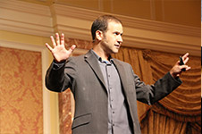

With a vision of merging technology and media, Charles has always built companies and partnerships that bridge these two worlds. As an innovator in the DVD authoring and programming space, he oversaw the growth and development of Anthem Digital, a high-volume DVD authoring and design company. During his tenure, he also helped branch the business into production and distribution of independent films. Charles is a graduate of USC’s School of Cinema/Television with a focus on the technology behind the entertainment industry. While there, he was mentored by some of the brightest engineers, filmmakers and visionaries from the fields of media technology and production. He has produced dozens of live events, feature films, commercials and music videos, as well as authored, designed and programmed thousands of DVD titles.
Since its inception, Charles has helped build Atlys, Inc. into an innovative company that bridges technology and media through custom online platforms. Taking years of UI/UX design and programming for media products, as well as his experience in production and distribution, Charles has developed a custom Content Delivery Network that reorganizes how servers authenticate and push content. As the CEO of Atlys, Inc., he heads up all software and technology development, while creating patents and intellectual property surrounding all of the company’s proprietary systems.
He loves 'giving back' and has mentored numerous young film makers through the Academy of Television Arts and Sciences Foundation and Film Garden programs in the recent past. Adelman has also made giving back and philanthropy a core component of AEI's corporate culture, by integrating non-profits into every part of the business life-cycle.
Specialties: interactive media technologies, virtual social community development, next generation user interfaces, feature & television production, live event technology and production, immersive experiences, content metadata
Highlights
- Focus on building companies that merge technology and media.
- A graduate of USC’s School of Cinema/Television with a focus on the technology behind media and the entertainment industry.
-Designed and programmed UI/GUI for custom media platforms, including development of a custom Content Delivery Network that reorganizes how servers authenticate and push content.
-Patent development for software systems
-Has mentored numerous young film makers through the Academy of Television Arts and Sciences Foundation and Film Garden programs in the recent past.
-Has produced dozens of live events, feature films, commercials and music videos.